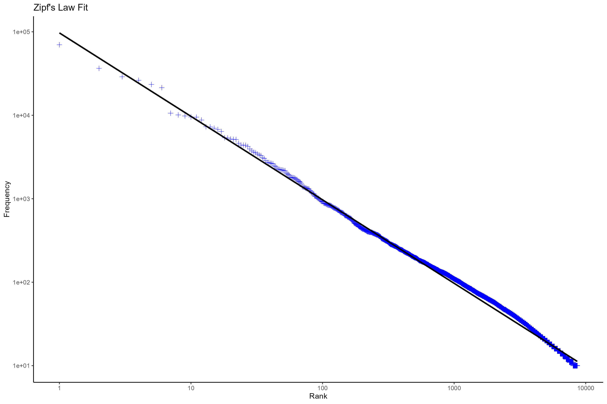
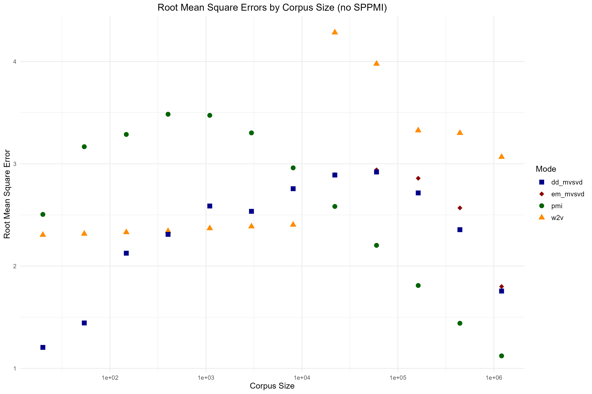
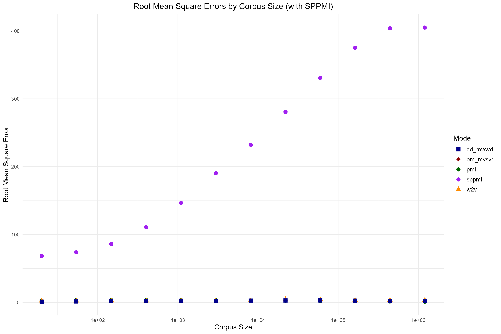

This project is a recreation and implementation of the research paper "Word Embeddings as Statistical Estimators" by Neil Dey, Matthew Singer, Jonathan P. Williams, and Srijan Sengupta from North Carolina State University, published on arXiv in January 2023. The goal was to reproduce the theoretical framework and experimental results presented in the original paper, gaining hands-on understanding of the statistical foundations underlying word embedding methods.
The original paper investigates word embeddings through a statistical lens. Word embeddings are fundamental tools in NLP that map words and phrases to vectors in Euclidean space, enabling the application of mathematical and machine learning methods to text data. However, these embeddings have historically been evaluated primarily through downstream task performance, lacking formal theoretical understanding of what linguistic features they actually capture.
The core research question addresses whether word embeddings, particularly Word2Vec, can be formally defined and analyzed using statistical frameworks. Rather than treating embeddings as black boxes evaluated solely on performance metrics, the paper proposes defining them in statistically meaningful ways using generative models with known features. Our recreation involved implementing the proposed algorithms, generating synthetic corpora using copula-based models, and validating that embedding methods can consistently recover known features from text data.
By recreating this work, we implemented the theoretical connection between Skip-gram and Pointwise Mutual Information matrices, developed the novel SVD-based estimators including EM-MVSVD and DD-MVSVD for handling infinite PMI values which was proposed in the paper, and replicated the experimental validation using the Brown Corpus.
Through recreating this research paper, I gained insights into both the theoretical foundations and practical implementation challenges of statistical NLP. The most significant learning was understanding how Word2Vec implicitly performs matrix factorization on Pointwise Mutual Information matrices. Implementing this connection from scratch, building on Levy and Goldberg's 2014 work, transformed my perspective on embeddings from opaque neural methods to interpretable statistical estimators.
Reproducing the copula-based text generation model taught me how to work with challenging statistical concepts including Gaussian copulas combined with Zipfian marginal distributions. Understanding Sklar's Theorem and implementing the code to combine marginal distributions into joint distributions was crucial for building the dense corpus generation model. This hands-on experience showed me how theoretical statistics can be applied to create practical models that reflect real-world linguistic phenomena like Zipf's law.
The recreation deepened my understanding of missing data problems in statistics through direct implementation. Not all missing values are created equal, the distinction between sparse settings where zeros represent true absence versus dense settings where zeros result from finite sampling has profound implications for algorithm design. Implementing the EM-MVSVD and DD-MVSVD algorithms from the paper's pseudocode gave me practical experience on statistical methods code implementation.
Working through the Expectation-Maximization algorithm implementation in the context of Singular Value Decomposition taught me how iterative optimization methods can handle complex matrix completion problems. I learned to implement exponential smoothing for convergence stabilization and understood the importance of proper initialization in iterative algorithms. Comparing my implementation results with the paper's figures validated my understanding and revealed subtleties in the algorithms that were not immediately apparent from the mathematical descriptions alone.
Replicating the experimental phase taught me rigorous methodology for comparing statistical estimators. I learned to generate controlled synthetic datasets where ground truth is known, enabling direct evaluation of method accuracy through RMSE measurements. Successfully reproducing the paper's key finding, that truncated SVD on SPPMI degrades with more data while MVSVD methods remain consistent, demonstrated the value of statistically principled approaches and validated my implementation.
The theoretical foundation rests on establishing the connection between Word2Vec and Pointwise Mutual Information. The Skip-gram objective with negative sampling implicitly factorizes a shifted PMI matrix. Specifically, Word2Vec with k negative samples factorizes SPMI = PMI - log(k)·J, where J is the all-ones matrix. This insight transformed embeddings from mysterious neural networks into interpretable statistical quantities measuring word co-occurrence patterns.
The project addresses a fundamental challenge in real text corpora: infinite PMI values arising from word pairs that never co-occur. This necessitates distinguishing between two statistical settings. In the sparse setting, some word pairs genuinely have zero probability of co-occurrence, and infinite PMI represents a real absence of semantic relationship. In the dense setting, all word pairs have non-zero co-occurrence probability, and observed zeros result merely from finite sample sizes.
To model language statistically, the project employs a first-order Markov chain with Zipfian marginal distributions and full co-occurrence structure specified through copulas. Zipf's law, which describes the power-law distribution of word frequencies in natural language, is empirically verified against the Brown Corpus. The model incorporates this linguistic scenario by fitting Zipfian distributions to word frequency data and using Gaussian copulas to capture dependency structure between words.
Sklar's Theorem provides the mathematical foundation for combining marginal distributions into multivariate distributions through copulas. This allows separating the problem into modeling individual word frequencies and modeling their co-occurrence relationships. The Gaussian copula choice is empirically motivated, it fits real corpus data well while remaining mathematically tractable for computation and analysis.
Our recreation began by confirming that word frequencies in the Brown Corpus follow Zipfian distributions, as described in the original paper. Plotting observed frequencies against rank on log-log scales revealed the characteristic power-law behavior, with fitted curves closely matching empirical data. This validation justified using Zipfian marginals in the statistical text generation model and provided confidence that our implementation of the copula-based synthetic corpus generation was correct.
The primary results successfully reproduced the patterns reported in the paper for how different methods approximate population SPMI across corpus sizes ranging from 10 to 1,000,000 tokens. Our implementation confirmed that Word2Vec, EM-MVSVD, and DD-MVSVD all maintain consistently low RMSE values regardless of corpus size, with errors remaining near zero across the entire range. This stability indicates these methods successfully recover underlying semantic structure even from relatively small samples.
We successfully replicated the paper's key finding: truncated SVD on SPPMI matrices exhibits dramatically different behavior from the other methods. Our results showed RMSE starting at moderate levels, for small corpora, but increasings systematically with corpus size, reaching values exceeding 400 for million-token corpora. This counterintuitive degradation occurs because larger corpora reveal more word pairs with observed zero co-occurrence, creating more negative PMI entries that truncation discards, progressively losing more information.
The convergence between Word2Vec and MVSVD methods in our reproduction provides validation of both the original paper's theoretical framework and our implementation. The matching results confirm that Word2Vec implicitly factorizes SPMI matrices and that the MVSVD methods provide statistically tractable alternatives with comparable estimation accuracy.
Recreating this research established for us the importance of viewing word embeddings as formal statistical estimators rather than purely algorithmic constructs. By implementing the framework that defines embeddings as low-rank approximations to population SPMI matrices, we gained appreciation for how this formalization enables rigorous analysis of embedding properties, bias-variance tradeoffs, convergence rates, and consistency, questions that would be unanswerable without statistical frameworks.
The reproduction helped us understand the crucial distinction between sparse and dense statistical settings. If language truly inhabits a sparse setting where many word pairs cannot co-occur, methods should preserve and interpret infinite PMI values as meaningful semantic signals. Conversely, if language is dense with sampling zeros, methods like DD-MVSVD that impute missing values using distributional knowledge become essential. This nuanced understanding came from implementing both perspectives.
Successfully reproducing the degradation of SPPMI with increasing data challenged our initial intuitions that more data always improves estimates. This finding from the paper, which we confirmed through our own implementation, demonstrates that theoretically sound methods matter more than data quantity alone. Simple approaches that discard information, even for seemingly pragmatic reasons like avoiding infinities, can fail in the large-data regime.
From a practical perspective, we learned that the MVSVD methods offer interpretable alternatives to Word2Vec with similar performance but greater theoretical transparency. Understanding exactly what these methods estimate helped us reason about when they should work well. The methods' probabilistic foundations also suggest potential for uncertainty quantification, Bayesian extensions, and integration with other probabilistic NLP models.
The copula-based text generation model we implemented provides a valuable tool for NLP evaluation. Generating synthetic text with known ground truth semantic structure enables testing whether methods capture intended properties rather than merely performing well on arbitrary tasks. This controlled evaluation paradigm could extend beyond embeddings to other NLP components.
This recreation project reinforced the value of reproducing research as a learning methodology. The process of translating mathematical descriptions into working code revealed implementation details and edge cases that were not apparent from reading the paper alone. We also gained appreciation for the original authors' contributions and the rigor required to produce reproducible research in statistical NLP.